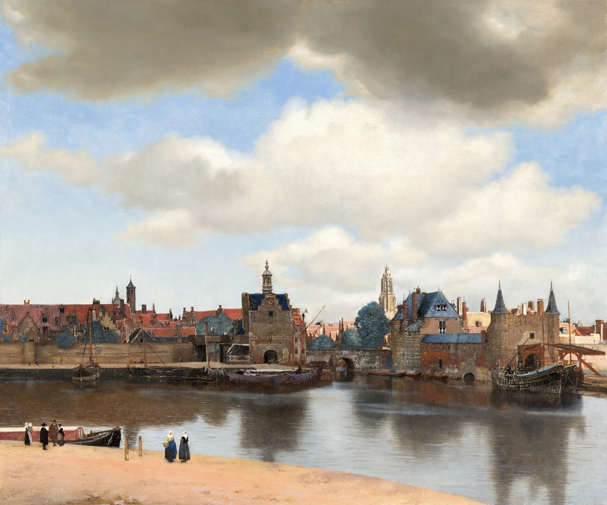

一人鑑賞はむしろ初心者向き。止まる、戻る、飛ばすを全部自分のペースで決められる。
美術館へ行ってみたいけれど、一人で入るのは少し気まずい。そんな心配は、最初の一回では意外と大きいものです。でも実際に展示室へ入ると、みんな基本的には作品を見ています。一人でいることより、「自分のペースで動ける」ことの方がすぐ大きく感じられます。
1. 一人で入ってもまったく問題ない
美術館では、一人で作品を見ている人は珍しくありません。展示室ではもともと静かに見る時間が長いので、映画館やレストランより一人行動のハードルは低い場所だと思います。
誰かと話し続ける必要もなく、周囲もそれぞれ作品を見ています。最初の一歩だけ少し緊張しても、展示室に入るとすぐ気にならなくなります。
チケットを買う、ロッカーへ荷物を入れる、入口で案内を見る。最初は一人だと全部自分で判断するので少し緊張しますが、分からなければスタッフに聞けば大丈夫です。展示室に入れば、あとは周囲の人と同じように作品を見るだけ。特別な振る舞いをする必要はありません。
2. 一番の利点は、自分の速度で見られること
一人なら、好きな作品の前で長く止まっても、興味のない部屋を早く通っても誰にも合わせなくていい。これが想像以上に楽です。
「この絵、もう一度見たい」と思ったら戻る。ベンチに座りたくなったら座る。ショップを先に見るか後に見るかも自由です。

一人鑑賞のいいところは、「止まる」だけでなく「飛ばす」自由もあることです。人気作品の前が混んでいれば先へ行き、後で戻ってもいい。興味のない章は少し早めに通り、好きな画家の部屋へ時間を残してもいい。自分の集中力を基準にできるのはかなり大きな利点です。
3. 感想をすぐ言葉にしなくていい
誰かと一緒だと、作品を見た直後に「どうだった？」と話すことがあります。それも楽しいのですが、まだ言葉にならない感覚を急いで説明することにもなります。
一人なら、よくわからないまま立っていてもいい。「なぜか気になる」をそのまま残せます。
特に現代アートや初めて見る作品では、「よく分からない」が普通にあります。一人なら、分からないまま次へ行っても、妙に気になって戻っても誰にも説明しなくていい。その保留の時間があると、後で解説を読んだときに「あれはそういうことだったのか」と答え合わせしやすくなります。
4. 気になった作品へ何度でも戻れる
一周してから入口近くの作品へ戻る、別の角度から見る、解説を読んでもう一度見る。一人だとこうした往復をしやすくなります。
一度目と二度目で見える場所が変わることがあり、それだけでも鑑賞が少し深くなります。
戻るときは、最初に気になった場所を一つ覚えておくと変化が分かります。一回目は色だったのに、二回目は人物の表情が気になった。解説を読んだ後は背景が見えた。見る順番が変わるだけでも、「二度見た意味」が生まれます。
5. 感想はスマホに一行だけ
一人鑑賞では、帰ったあとに誰かと話す代わりに、一行だけメモを残しておくと記憶がつながります。
- 「思ったより小さい」
- 「青がすごく強かった」
- 「この人物の視線だけ気になった」
- 「解説を読んでもよくわからなかった」
うまい感想を書く必要はありません。後からその一行を見ると、その日の展示室の空気まで思い出せることがあります。
6. もちろん誰かと行く良さもある
一人が正解という話ではありません。誰かと行くと、自分が見ていなかった場所を教えてもらえます。「自分はこの絵が一番好き」と言われると、同じ展示でも別の見え方が増えます。
一人は自分のペース、二人以上は他人の視点。どちらも違う楽しさがあります。
7. 鑑賞後にカフェで一枚だけ振り返る
展示を見終えたら、館内や近くのカフェで、今日一番残った作品を一枚だけ思い出してみます。
「何が良かったか」まで説明できなくても、作品名を検索したり、図録を開いたりするだけで十分です。鑑賞後の数分があると、一人で見た時間が自分の中に残りやすくなります。
8. 一人で行けると、美術館が日常の選択肢になる
誰かの予定を合わせなくても、「今日は午後が空いたから行こう」と動けるようになります。
展覧会は期間が決まっているので、一人で行けるだけで見逃しが減ります。美術館が特別なイベントから、ふらっと行ける趣味へ変わっていきます。
一人で行けるようになると、「この展覧会、誰か一緒に行けるかな」と予定調整する前にチケットを取れるようになります。気になる展示を見つけたら行く。その軽さが増えるほど、作品を見る回数も増え、自分の好き嫌いも少しずつ分かってきます。
一人鑑賞はむしろ初心者向き。止まる、戻る、飛ばすを全部自分のペースで決められる。